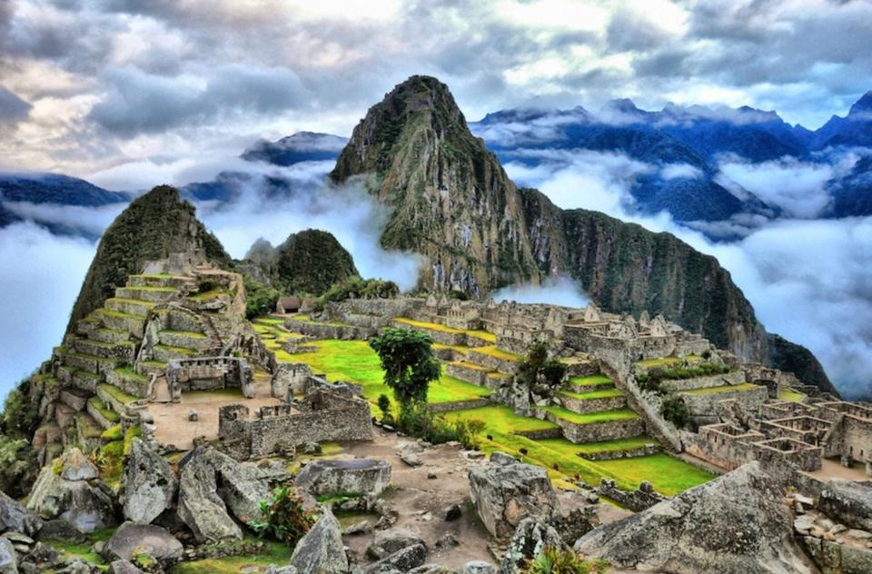
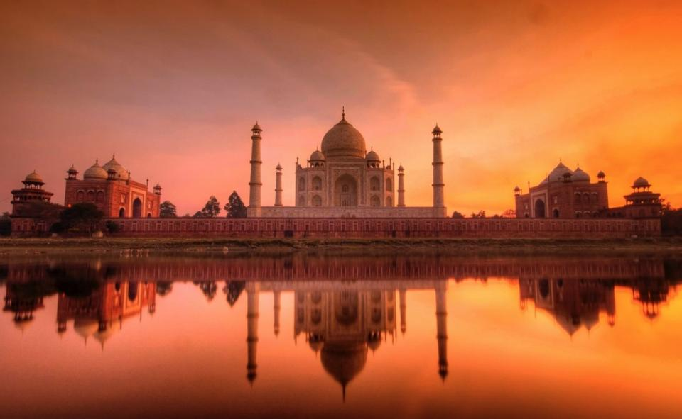

Kuai-Hawaii

Kauai, Hawaii owns the medal of the rainiest place on earth, allowing for a
tropical paradise. Hike, swim, bike, and dive.!
Antarctica

Antarctica is on average the coldest, windiest, driest, and highest continent.
This desert continent is, however, home to millions of penguins of different species.
Peru
Hike up the mountain ridge where Machu Picchu sits and you will see
the peak of Inca civilization. This beautiful place was built in 1450
and was only occupied for ~100 years until the Spanish Conquest.
Taj-Mahal
The Taj Mahal in northern India is a beautiful white marble mausoleum.
The Taj Mahal is regarded as the jewel of Muslim art in India and is an
often sought after location for worship and tourism. So unplug from your
iPhone, quit chatting on Snapchat online, and book your next flight
around the world!